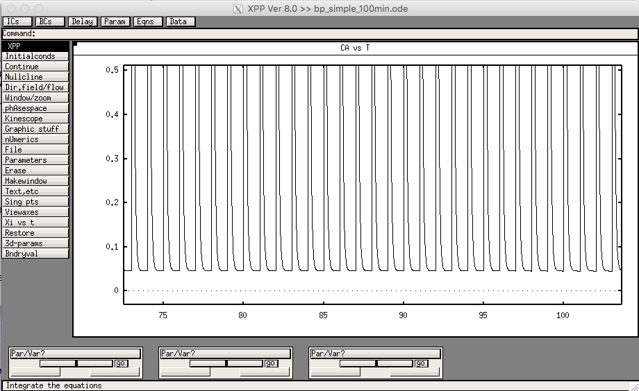

This is the XPP model associated with the paper
Pinto TM, Schilstra MJ, Roque AC, Steuber V (2019) Binding of
Filamentous Actin to CaMKII as a Potential Mechanism for the
Regulation of Bidirectional Synaptic Plasticity by βCaMKII in
Cerebellar Purkinje Cells. PLOS Computational Biology
This model was contributed by TM Pinto.
To run the model start XPP with a command:
xppaut bp_simple_100min.ode
If you then select Window/zoom to zoom in (click and drag with the mouse in a region just before 100) and then run the model ( Initialconds -> Go) you should see a graph like:
